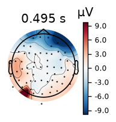

Vos marqueurs ne sont pas dans l'EEG mais dans un fichier à part (par ex. un -eve.fif MNE, ou un tableau que vous construisez). Voici comment les fournir.
Trois façons de fournir les événements
L'argument events accepte un chemin, le mot-clé "find", ou un tableau NumPy déjà en mémoire.
1. Un fichier MNE -eve.fif
result = reconstruct_sources(
subject="sample", output_dir="D:/derivatives",
t1_path="D:/anat/sample_T1w.nii.gz",
eeg_file="D:/eeg/sample.edf",
digitization="D:/dig/sample.elc",
simnibs_bin_dir="C:/Users/me/SimNIBS-4.5/bin",
events="D:/eeg/sample-eve.fif", # <- fichier externe
event_id={"aud_l": 1, "aud_r": 2}, # conditions a garder
tmin=-0.2, tmax=0.5,
)Le fichier suit le format MNE : trois colonnes (échantillon, valeur précédente, code). event_id choisit les codes à épocher et les nomme.
2. Détection depuis la voie trigger
Si les impulsions sont sur une voie de stimulation dans l'EEG, "find" appelle mne.find_events.
events="find", event_id={"aud_l": 1}3. Un tableau construit à la main
Utile quand les temps viennent d'un journal comportemental. Colonnes : échantillon, 0, code.
import numpy as np
events = np.array([[500, 0, 1],
[1200, 0, 1],
[2100, 0, 2]])
reconstruct_sources(..., events=events, event_id={"aud_l": 1, "aud_r": 2})